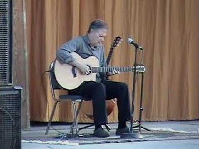
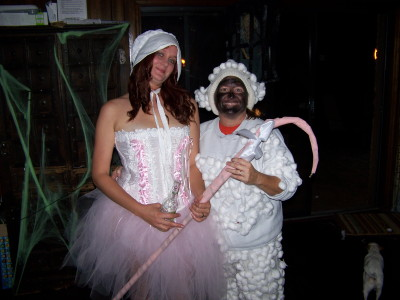

2010 Holiday Web Page
| Erich and Margie's 2010 Holiday Web Page |
December We enjoyed Michele and Guenevere's annual solstice party. It was 77 degrees when we made our annual trip to the beach on Christmas day. We had 11 guests at our annual New Year's Eve Party, and went out at midnight to howl at the full moon.
January We enjoyed Barbara's annual back-to-school brunch. At the grocery store, Erich got behind a woman with a lot of coupons who bought $111 worth of food for $16. The bagger told me one shopper saved $358 using coupons. We saw Leo Kottke, who made sounds we had never heard before from a guitar. We participated in a mini-golf tournament with some friends, getting the second and third spots.
February After noticing a cloud of feathers waft by her office window, Margie looked out to see a barred owl flying up to a branch, with a squirrel nearby. We never did figure out who the victim or culprit was. We saw the Gypsy Jazz group The Cook Trio with several of our friends. Erich's football team, the Indianapolis Colts, embarrassed themselves in the Super Bowl. Some of Erich's puzzles were used in a textbook about puzzle solving aimed at high performing middle and high school students. Erich's brother, sister-in-law, and niece visited from California. They enjoyed seeing manatees, campus, the Atlantic Ocean, skydivers, and learning Bayes' Theorem. Erich enjoyed watching curling during the Winter Olympics, despite being made fun of by Margie. We enjoyed Missy's Chinese New Year celebration, where Margie won 5 Mah Jongg hands in a row, but still lost to Michael who won 7 hands in a row. Erich spilled super glue on the top and inside of his desk at school. We went to Jacksonville with Guenevere and Michele to see the Indigo Girls. They were fantastic, but opening for them was a band called A Fragile Tomorrow, who should have called themselves "A Fragile Understanding of What Good Music Sounds Like". We even saw a deer on the way home on the interstate.
March Erich heard from his freshman college roommate for the first time in 26 years. We had the shortest department meeting in recent memory: 20 minutes. Margie added a question to the census form we filled out: favorite ice cream flavor. Margie attended the inauguration of Stetson's new president. Among Dr. Libby's many attributes mentioned were her comprehensive background in genetics, finance, and administration, her two labrador retrievers, and her green suede shoes. We celebrated Earth Hour by turning off all our lights for an hour. This barely offset some friends of ours who celebrated Human Achievement Hour by turning all their lights on. For the first time, Erich made it to school in the morning hitting 17 green lights and no red ones. We had an armadillo visit our yard frequently.
April We celebrated Margie's birthday with a games party (at which she didn't win any games), a fine meal, and waking up early the next morning to watch the space station pass over and then watch one of the last space shuttle launches 10 minutes later. Erich got the turkey/bacon/guacamole sub he ordered from Quiznos without guacamole, reminding him of the time he got an Arby's roast beef sandwich without the roast beef. On Erich's birthday, after our final exams, we had fourth row tickets for a concert: Janis Ian, Patty Larkin, and Catie Curtis. Margie announced her retirement for May 2011.
May We attended our third annual Beltane Fire celebration, involving belly dancers, a May pole, marvelous homemade Indian food, silly games, and even sillier prizes. We vacationed in Ft. Myers for 4 nights, this time concentrating on wildlife. Though we did fit in some shopping, movies, and ethnic food. When we stopped for gas at a BP station, Margie drew in an oil slick on their map. You can see our vacation photo album here. One of Erich's birthday gifts was a subscription to NetFlix, bringing us into the 20th century. Erich's childhood hero, Martin Gardner, passed away.
June Erich bought a new computer. And when it wouldn't fit on his old desk, he bought a new desk. At the Brandi Carlile concert we attended with Michele and Guenevere, Erich sat next to a woman who tapped his knee and hugged him when she got excited. Erich watched 3 years worth of episodes of "Arrested Development" and 4 years worth of episodes of "My Name is Earl".
July Erich's college friends Kelly and Juliette visited with their son Kelvin. In addition to playing mini-golf and watching skydivers fall from the sky, we saw Marc Cohn in concert, with our friend Chris Burns opening for him! Erich bought a new car, a light blue Honda Fit Sport. We put a thousand miles on it the first week by vacationing in Ft. Myers Beach for 4 days. We reviewed two new mini-golf places, played ping-pong, did some Christmas shopping, and of course photographed wildlife. You can see our pictures here.
August We saw the entertaining Dale K hypnotize a dozen students at a show. Two of Erich's puzzles were used in the U.S. Puzzle Championship. We watched 3 years worth of episodes of "West Wing".
September Our neighborhood was visited several times by a tortoise and an owl. Erich played in a charity poker tournament and won third place. We saw the Subdudes in concert, a very rowdy show! We took a sculpture walk to see a dozen new sculptures in downtown Deland. We went canoeing, and you can see photos from our trip here.
October We saw Garrison Starr open for Mary Chapin Carpenter. Margie encountered a crane rodeo: construction crane operators were practicing for certification. We found out that 10 pages of Erich's puzzles will appear in a special section of the March 2011 issue of World of Puzzles magazine. Erich attended the 12th annual Halloween Party alone, since Margie was too sick to go. You can see pictures here.
November We unintentionally sneaked into the Deland Original Music Festival. One of Erich's students hit him in the head with a piece of chalk. We saw Lyle Lovett and his 14-piece Large Band, after eating the best take-out food ever in Jacksonville with Margie's friend Jimmy. Margie found a raccoon skull in our yard.
December Margie went into school to find her office chair mysteriously broken. We had second row seats to watch an energetic Paula Cole. On the last day of class, one of Erich's students fell asleep in class and snored. At a local restaurant, we were mistaken for grandparents. Erich's father visited for 5 days. Uncharacteristically cold weather limited our outdoor activities to a visit to the beach and a walk at Lake Woodruff Wildlife Refuge. But we also saw a movie, visited the Orlando Museum of Art, looked at photographs, went through the pile of art he brought me, and hung out with some friends. Erich's electric shaver died a grinding death. Margie got up in the wee hours to watch and photograph the lunar eclipse. We attended Guen and Michele's annual solstice celebration, but had to leave early to see Rockapella give the best holiday concert ever.
 

 |